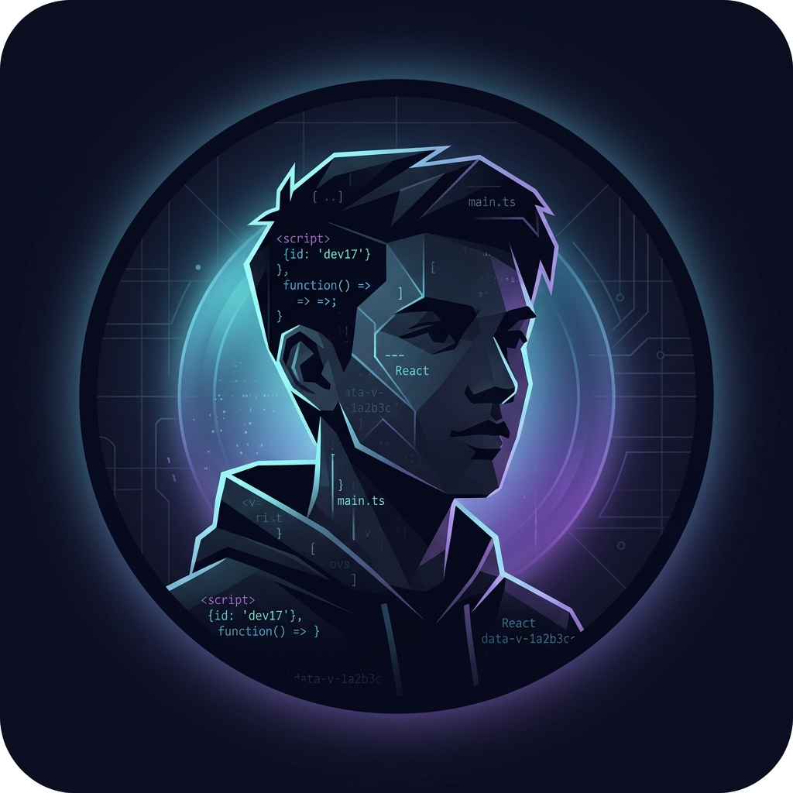

01
MarketLens (MarketAI-Analyst)
Sistem pemantau kondisi pasar keuangan otomatis yang terhubung ke bot Telegram, menyajikan ringkasan berita penting dan analisis harian secara instan.
Pengembangan
Siswa PPLG · SMK Negeri 1 Kebumen
|
Halo! Aku suka ngulik kode buat bikin hal-hal yang berguna — mulai dari web, bot pembantu, otomasi tugas, sampai sistem analisis data. Belajar langsung dari praktek dan terus berprogres di tiap proyek.
Kumpulan karya dari tugas sekolah sampai eksperimen pribadi. Klik kartu proyek untuk membaca penjelasan santai, intip potongan kode aslinya, atau coba simulasi interaktifnya!
Sistem pemantau kondisi pasar keuangan otomatis yang terhubung ke bot Telegram, menyajikan ringkasan berita penting dan analisis harian secara instan.
Aplikasi absensi sekolah digital agar siswa dan guru nggak ribet pakai kertas tanda tangan lagi. Dilengkapi pencatatan jam tepat waktu dan rekap bulanan.
Aplikasi kasir komputer lengkap untuk toko sekolah. Bisa hitung total belanja dengan cepat, kelola stok barang, dan simpan riwayat transaksi ke database MySQL.
Sistem otomatisasi yang mengawasi aturan transaksi dan batasan risiko akun secara konsisten tanpa emosi, dilengkapi proteksi stop-loss wajib.
Bot pemantau harga komoditas emas (XAU/USD) 24 jam penuh yang mengirimkan peringatan seketika saat mendeteksi momentum lonjakan harga yang signifikan.
Program penguji strategi menggunakan ribuan data harga masa lalu untuk mengukur win-rate, rasio untung-rugi, dan potensi drawdown secara objektif.
Kenalin, namaku Nadif Prana Saputra. Saat ini sekolah di SMK Negeri 1 Kebumen jurusan PPLG (Pengembangan Perangkat Lunak dan Gim), umur 17 tahun.
Daripada cuma baca buku teori berjam-jam, aku lebih suka langsung buka text editor dan coba bikin sesuatu. Walaupun awalnya sering nemu bug atau bingung, rasa puas ketika programnya jalan itu yang bikin nagih terus buat ngoding.
Bidang yang sering aku eksplorasi meliputi pembuatan website, pemrograman Python, otomasi tugas, bot pembantu, dan pengolahan data pasar modal. Pada intinya, aku suka hal-hal yang bikin kegiatan sehari-hari jadi lebih cepat dan gampang.
Cari tahu dulu apa yang mau diselesaikan sebelum pusing milih bahasa atau framework.
Bukan cuma asal copy-paste kode dari internet, tapi dipelajari kenapa logikanya bisa berjalan.
Bug dan error itu bukan tanda gagal, tapi tanda kalau kita lagi melangkah lebih maju.

Nadif Prana Saputra
Siswa PPLG · Kebumen
Punya ide proyek seru, mau tanya-tanya soal salah satu karya di atas, atau sekadar mau bertukar pikiran seputar dunia ngoding? Jangan ragu buat kontak aku!
"Terus belajar, terus berkarya, dan nikmati setiap prosesnya."— Nadif Prana Saputra